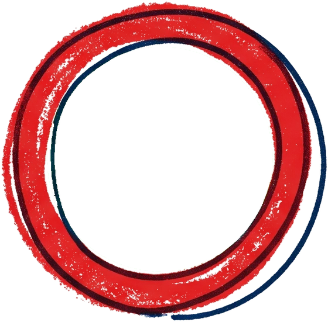
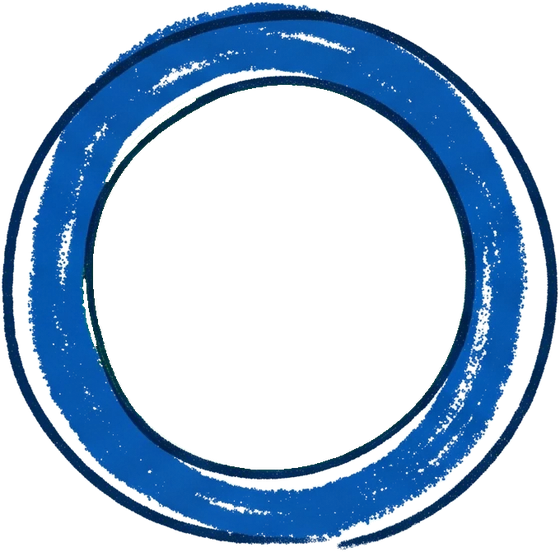
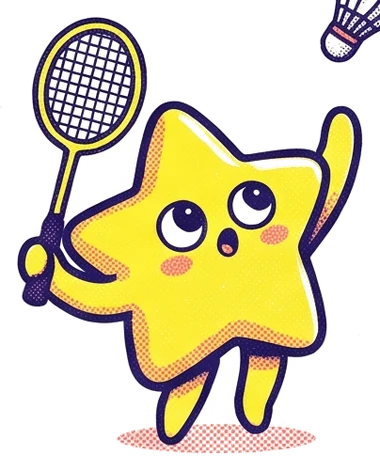
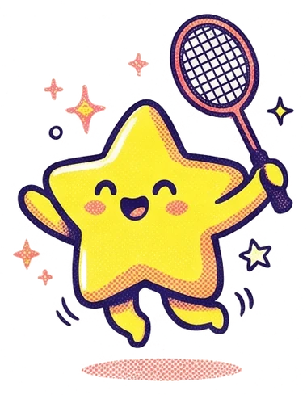
BEGINNER'S GUIDE · 14 NOV 2026
ต้อนรับสู่
2026 Winter
Sports Day
ฉบับมือใหม่ เข้าใจง่าย!
1
แข่งกี่รอบ? พักตอนไหน?
แข่ง3รอบ
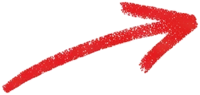
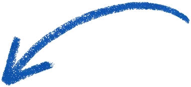
(ไป-กลับ)
พักทุก11นาที
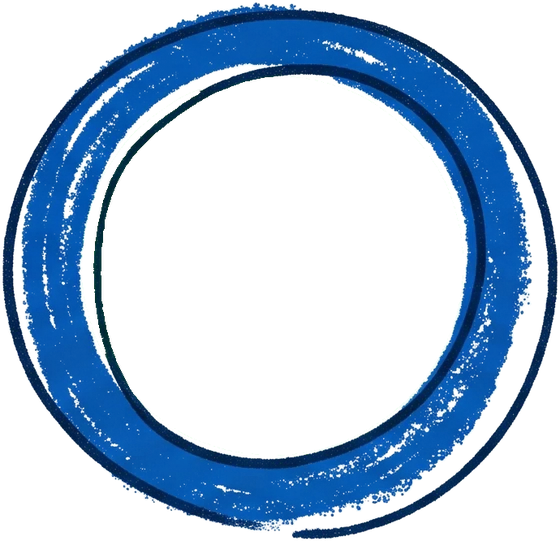
2จับคู่สุดสมดุล
มือใกล้เคียงกัน สู้สนุก ไม่โหดเกินไป
และ ได้เจอเพื่อนใหม่แน่นอน
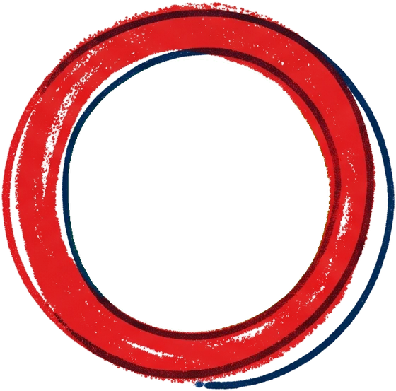
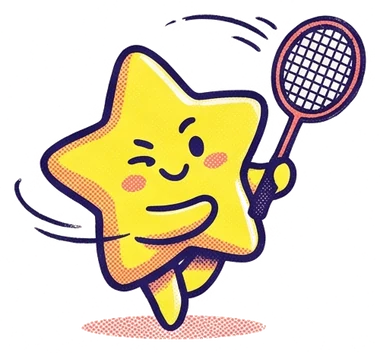
=
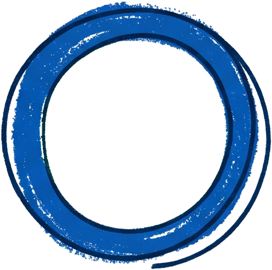
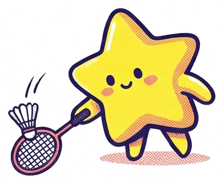
3
ให้คะแนนยังไง?
ชนะ 2 เกมรวด3แต้ม
เสมอ1แต้ม
แพ้0แต้ม
สะสมให้ครบ 3 รอบ ทีมไหนคะแนนรวมสูงสุด
คว้าแชมป์!
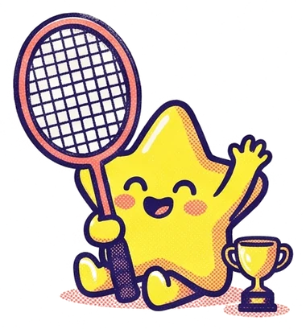
HEAL TIP
มุมฮีลใจมือใหม่
ไม่ต้องเครียด ไม่ต้องกดดันเรื่องทำแต้มเสีย ที่นี่เน้น สนุก มิตรภาพ บรรยากาศดีๆ เล่นให้เต็มที่ แล้วสนุกไปด้วยกันนะ!